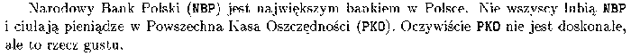

Pakiet zawiera makropolecenie do definiowania akronimów. Definiuje siê polecenie zawieraj±ce akronim (wraz ze sposobem jego prezentowania; np. rodzaj czcionki) i pe³ne rozwiniêcie nazwy. Przy pierwszym u¿yciu zdefiniowanego polecenia pojawi siê pe³na nazwa, a przy nastêpnych sam akronim. W jêzyku polskim forma pe³na powinna byæ zdefiniowana tak, aby koñcówki odmiany by³y zgodne z kontekstem u¿ycia (patrz przyklad; pe³na nazwa zosta³a zdefiniowana b³êdnie).
Przyk³ad
\acromake{NBP}{{\tt NBP}}{Narodowy Bank Polski}
\acromake{PKO}{{\tt PKO}}{Powszechna Kasa Oszczêdno¶ci}
\NBP jest najwiêkszym bankiem w Polsce.
Nie wszyscy lubi± \NBP i ciu³aj± pieni±dze w \PKO. Oczywi¶cie
\PKO nie jest doskona³e, ale to rzecz gustu.

Uwaga:
Je¿eli kolejne u¿ycie polecenia jest na innej stronie ni¿ pierwsze
to pojawia siê dodatkowy komentarz informuj±cy na której
stronie jest definicja (w jêzyky angielskim). Zmodyfikowana
wersja pakietu (polsko--angielska) nosi nazwê iaacromake
(mo¿na go znale¼æ na serwerze
IAPW.ia.pw.edu.pl/sys/emtex/texinput/latex2e/local loguj±c siê
jako GUEST -- nie anonymos).
Pakiet jest dostêpny pod adresem: ftp://ftp.gust.org.pl/TeX/macros/latex/contrib/misc/acromake.sty
 W³odzimierz Macewicz
W³odzimierz Macewicz